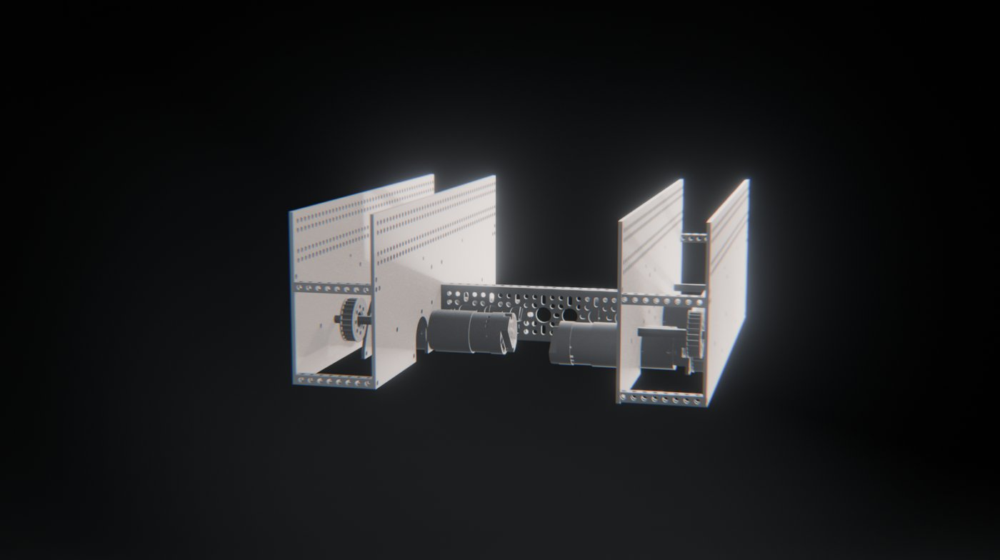

Chassis
V1's parallel plates gave us maneuverability and defense but had no mounting holes, and the U-channels we added made it heavy. V2 added holes and cut weight, but its wood plates could break. V3 keeps components easy to remove for maintenance.